A Quaint Laboratory
It feels unsafe to just spy around those corners that remain unvisited for ages. It is time for you to pack your bags with some supplies and leave. You consider leaving some apricots preserve on one of the shelves, so the next adventurer might get a bit of a treat as they would follow your lead.
Graphics
Patterns 200x200
 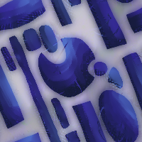
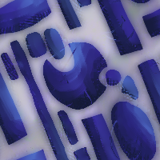
Proud Rat Emotes
Have these proud little vermin. I use them on a Discord, but do with them as you please. No credits needed, more flags to come. Write me if you would love to have a specific flag!
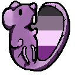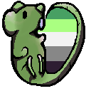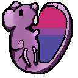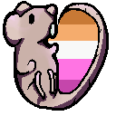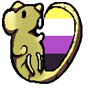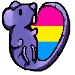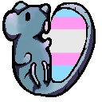
Fruit!
In honor of the participants of my study for the Master's Thesis, I drew some fruit! Take it with you, and eat up.
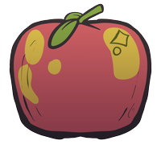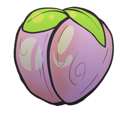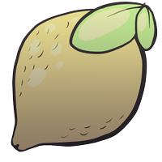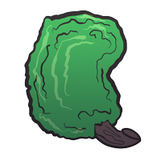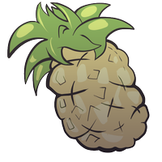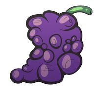